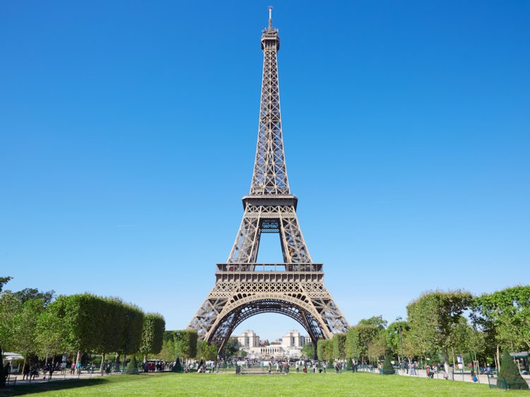
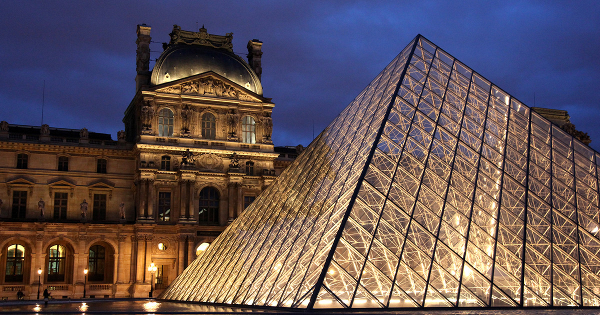
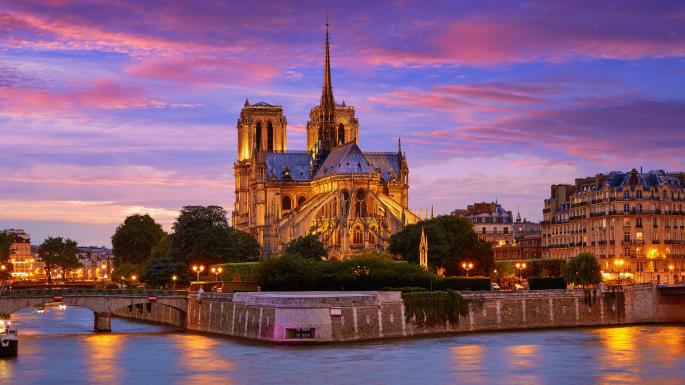
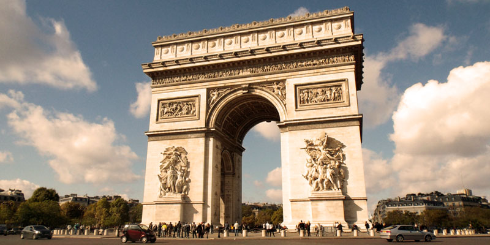

| Point of Interest | About | Picture |
|---|---|---|
| Eiffel Tower | The Eiffel Tower is located in Paris and one of the most recognisable buildings globally. The tower has three levels for tourists. Restaurants take the first and second level of the tower, while the third platform is the observation deck. The tower itself stands 324 meters and is must-see for those visiting France. |  |
| The Louvre Museum | The Louvre Musuem is the largest art museum and is a monument located in Paris. It exhibits many famous paintings and sculptures such as the Mona Lisa and Diana of Versailles. The museum is also known for the Louvre Pyramid, the large glass and metal pyramid at the entrance of the museum. |  |
| Notre-Dame de Paris | The Notre-Dame de Paris is a cathedral located in Paris. It was completed in 1345 and is a stunning piece of architecture surrounded by beautiful nature. Admission to the cathedral is free and its website has many interesting facts about the cathedral, one of them being that there are beehives on the rooftops. |  |
| Arc de Triomphe | The Arc de Triomphe is located in Paris and was dedicated to the armies of the Revolution and the Empire. A flame of remembrance is rekindled every day at 6:30PM. Beneath the structure lies a tomb for an unknown soldier from World War I. |  |